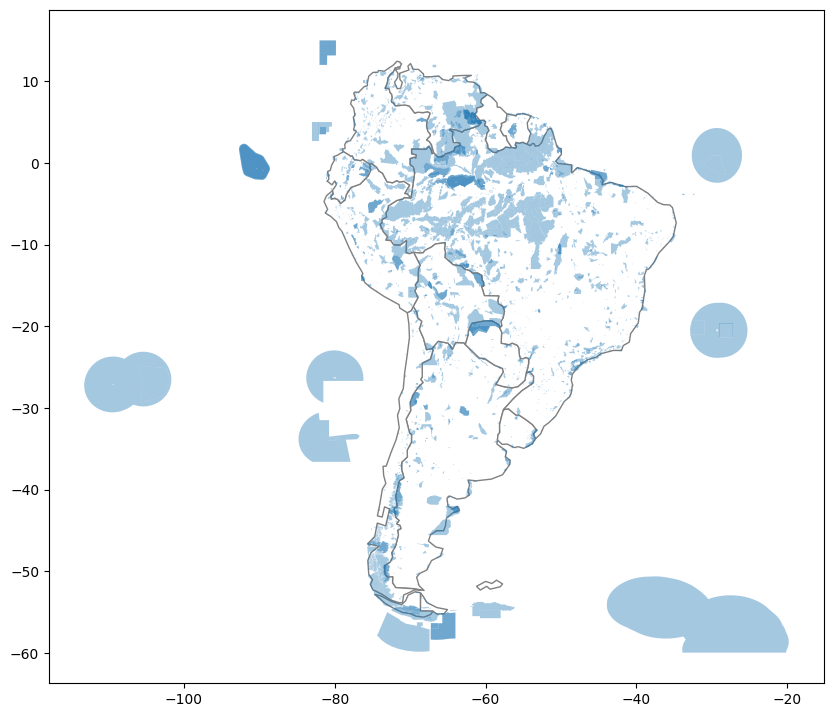

당신은 조류 보존 전문가이며 보라색 제비의 이동 패턴을 이해하고자 합니다. 연구 결과 이 새들은 일반적으로 미국 동부에서 여름 번식기를 보내고 겨울에 남미로 이동한다는 것을 발견했습니다. 그러나 이 새는 멸종 위기 종으로 등재되어 있기 때문에, 이 새들이 더 자주 방문하는 위치를 자세히 살펴보고자 합니다.
남미에는 몇 개의 보호 지역이 있으며, 이 지역은 이곳에서 이동하는 (또는 살아있는) 종이 최대한 번성할 수 있도록 특별한 규정에 따라 운영됩니다. 보라색 제비가 이 지역을 방문하는 경향이 있는지 알고 싶습니다. 이 질문에 대한 답변을 찾기 위해 최근 수집된 11종의 새들의 연중 위치를 추적하는 데이터를 사용할 것입니다.
시작하기 전에 아래 코드 셀을 실행하여 모든 것을 설정하세요.
import pandas as pdimport geopandas as gpdfrom shapely.geometry import LineString
Exercises
1) 데이터 로드.
다음 코드 셀을 실행하여 GPS 데이터를 pandas DataFrame birds_df로 로드하세요.
from google.colab import drivedrive.mount('/content/drive')
Mounted at /content/drive
# Load the data and print the first 5 rowsbirds_df = pd.read_csv("/content/drive/MyDrive/2023 데이터마이닝/dataset/purple_martin.csv", parse_dates=['timestamp'])print("There are {} different birds in the dataset.".format(birds_df["tag-local-identifier"].nunique()))birds_df.head()
There are 11 different birds in the dataset.
timestamp
location-long
location-lat
tag-local-identifier
0
2014-08-15 05:56:00
-88.146014
17.513049
30448
1
2014-09-01 05:59:00
-85.243501
13.095782
30448
2
2014-10-30 23:58:00
-62.906089
-7.852436
30448
3
2014-11-15 04:59:00
-61.776826
-11.723898
30448
4
2014-11-30 09:59:00
-61.241538
-11.612237
30448
이 데이터셋에는 “tag-local-identifier” 열에서 고유한 값을 가진 11마리의 새가 있습니다. 각 새는 연도의 다른 시기에 수집된 여러 측정치가 있습니다.
다음 코드 셀을 사용하여 birds GeoDataFrame을 만드세요. - birds는 birds_df의 모든 열을 가져와야 하며, “geometry” 열에는 (경도, 위도) 위치를 포함하는 Point 객체가 있어야 합니다. - birds의 CRS는 {'init': 'epsg:4326'}로 설정하세요.
# Your code here: Create the GeoDataFramebirds = gpd.GeoDataFrame(birds_df, geometry=gpd.points_from_xy(birds_df["location-long"], birds_df["location-lat"]))# Your code here: Set the CRS to {'init': 'epsg:4326'}birds.crs = {'init': 'epsg:4326'}
/usr/local/lib/python3.10/dist-packages/pyproj/crs/crs.py:141: FutureWarning: '+init=<authority>:<code>' syntax is deprecated. '<authority>:<code>' is the preferred initialization method. When making the change, be mindful of axis order changes: https://pyproj4.github.io/pyproj/stable/gotchas.html#axis-order-changes-in-proj-6
in_crs_string = _prepare_from_proj_string(in_crs_string)
birds.head()
timestamp
location-long
location-lat
tag-local-identifier
geometry
0
2014-08-15 05:56:00
-88.146014
17.513049
30448
POINT (-88.14601 17.51305)
1
2014-09-01 05:59:00
-85.243501
13.095782
30448
POINT (-85.24350 13.09578)
2
2014-10-30 23:58:00
-62.906089
-7.852436
30448
POINT (-62.90609 -7.85244)
3
2014-11-15 04:59:00
-61.776826
-11.723898
30448
POINT (-61.77683 -11.72390)
4
2014-11-30 09:59:00
-61.241538
-11.612237
30448
POINT (-61.24154 -11.61224)
2) 데이터 시각화.
다음으로, GeoPandas에서 'naturalearth_lowres' 데이터 세트를 로드하고, americas를 북미와 남미의 모든 국가의 경계를 포함하는 GeoDataFrame으로 설정합니다. 변경하지 마시고 다음 코드 셀을 실행하세요.
# Load a GeoDataFrame with country boundaries in North/South America, print the first 5 rowsworld = gpd.read_file(gpd.datasets.get_path('naturalearth_lowres'))americas = world.loc[world['continent'].isin(['North America', 'South America'])]americas.head()
FutureWarning: The geopandas.dataset module is deprecated and will be removed in GeoPandas 1.0. You can get the original 'naturalearth_lowres' data from https://www.naturalearthdata.com/downloads/110m-cultural-vectors/.
world = gpd.read_file(gpd.datasets.get_path('naturalearth_lowres'))
pop_est
continent
name
iso_a3
gdp_md_est
geometry
3
37589262.0
North America
Canada
CAN
1736425
MULTIPOLYGON (((-122.84000 49.00000, -122.9742...
4
328239523.0
North America
United States of America
USA
21433226
MULTIPOLYGON (((-122.84000 49.00000, -120.0000...
9
44938712.0
South America
Argentina
ARG
445445
MULTIPOLYGON (((-68.63401 -52.63637, -68.25000...
10
18952038.0
South America
Chile
CHL
282318
MULTIPOLYGON (((-68.63401 -52.63637, -68.63335...
16
11263077.0
North America
Haiti
HTI
14332
POLYGON ((-71.71236 19.71446, -71.62487 19.169...
다음 코드 셀을 사용하여 다음을 모두 보여주는 단일 플롯을 만듭니다. (1) americas GeoDataFrame의 국가 경계 및 (2) birds_gdf GeoDataFrame의 모든 지점입니다.
여기서 특별한 스타일링에 대해 걱정할 필요가 없습니다. 모든 데이터가 제대로 로드되었는지 빠른 검증으로서 일단 기본 플롯을 만드는 것이 목적입니다. 특히 색상을 사용하여 새를 구분할 필요가 없으며 시작점과 끝점을 구분할 필요도 없습니다. 다음 단계에서 그것을 수행할 것입니다.
# Your code here# Create a mapax = americas.plot(figsize=(10,10), color='white', linestyle=':', edgecolor='gray')birds.plot(ax=ax, markersize=10)# Uncomment to zoom inax.set_xlim([-110, -30])ax.set_ylim([-30, 60])
(-30.0, 60.0)
3) 각 새가 여행을 시작하고 끝내는 위치는 어디인가요? (파트 1)
경로를 더 자세히 살펴보기 위해, 각 새의 경로를 나타내는 LineString 객체를 담은 path_gdf와 출발점을 담은 start_gdf 두 개의 GeoDataFrame을 만듭니다:
- path_gdf는 Point 객체의 목록에서 LineString 객체를 생성하기 위해 LineString() 메서드를 사용합니다.
- start_gdf는 각 새의 출발점을 포함합니다.
# GeoDataFrame showing path for each birdpath_df = birds.groupby("tag-local-identifier")['geometry'].apply(list).apply(lambda x: LineString(x)).reset_index()path_gdf = gpd.GeoDataFrame(path_df, geometry=path_df.geometry)path_gdf.crs = {'init' :'epsg:4326'}# GeoDataFrame showing starting point for each birdstart_df = birds.groupby("tag-local-identifier")['geometry'].apply(list).apply(lambda x: x[0]).reset_index()start_gdf = gpd.GeoDataFrame(start_df, geometry=start_df.geometry)start_gdf.crs = {'init' :'epsg:4326'}# Show first five rows of GeoDataFramestart_gdf.head()
/usr/local/lib/python3.10/dist-packages/pyproj/crs/crs.py:141: FutureWarning: '+init=<authority>:<code>' syntax is deprecated. '<authority>:<code>' is the preferred initialization method. When making the change, be mindful of axis order changes: https://pyproj4.github.io/pyproj/stable/gotchas.html#axis-order-changes-in-proj-6
in_crs_string = _prepare_from_proj_string(in_crs_string)
/usr/local/lib/python3.10/dist-packages/pyproj/crs/crs.py:141: FutureWarning: '+init=<authority>:<code>' syntax is deprecated. '<authority>:<code>' is the preferred initialization method. When making the change, be mindful of axis order changes: https://pyproj4.github.io/pyproj/stable/gotchas.html#axis-order-changes-in-proj-6
in_crs_string = _prepare_from_proj_string(in_crs_string)
tag-local-identifier
geometry
0
30048
POINT (-90.12992 20.73242)
1
30054
POINT (-93.60861 46.50563)
2
30198
POINT (-80.31036 25.92545)
3
30263
POINT (-76.78146 42.99209)
4
30275
POINT (-76.78213 42.99207)
다음 코드 셀을 사용하여 각 새의 최종 위치를 포함하는 GeoDataFrame end_gdf를 생성합니다.
형식은 start_gdf와 동일해야하며 두 개의 열 (“tag-local-identifier” 및 “geometry”)이 있어야합니다. “geometry” 열에는 Point 객체가 포함되어야합니다.
/usr/local/lib/python3.10/dist-packages/pyproj/crs/crs.py:141: FutureWarning: '+init=<authority>:<code>' syntax is deprecated. '<authority>:<code>' is the preferred initialization method. When making the change, be mindful of axis order changes: https://pyproj4.github.io/pyproj/stable/gotchas.html#axis-order-changes-in-proj-6
in_crs_string = _prepare_from_proj_string(in_crs_string)
end_gdf.head()
tag-local-identifier
geometry
0
30048
POINT (-47.53632 -4.43758)
1
30054
POINT (-62.47914 -5.03840)
2
30198
POINT (-57.46417 -2.77617)
3
30263
POINT (-50.19230 -5.70504)
4
30275
POINT (-57.70404 -16.72336)
4) 각각의 새들은 어디에서 여행을 시작하고 끝냅니까? (파트 2)
위의 문제에서 사용한 GeoDataFrame인 path_gdf, start_gdf, end_gdf를 사용하여 모든 새의 경로를 한 지도에 시각화해보세요. 이 때 americas GeoDataFrame도 사용할 수 있습니다.
새들이 모두 남아메리카 어딘가로 이동하는 것으로 보입니다. 하지만 그들이 보호구역으로 가는 걸까요?
다음 코드 셀에서는 남아메리카의 모든 보호구역 위치가 포함 된 GeoDataFrame protected_areas를 만듭니다. 해당 형상 파일은 protected_filepath 경로에 위치합니다.
# Path of the shapefile to loadprotected_filepath ="/content/drive/MyDrive/2023 데이터마이닝/dataset/SAPA_Aug2019-shapefile/SAPA_Aug2019-shapefile-polygons.shp"# Your code hereprotected_areas = gpd.read_file(protected_filepath)
6) 남미의 보호 지역은 어디입니까? (파트 2)
다음 코드 셀을 사용하여 protected_areas GeoDataFrame을 사용하여 남아메리카의 보호 지역 위치를 보여주는 플롯을 만드세요. (일부 보호 지역이 육지에 있고 다른 일부는 해양 수역에 있음을 알 수 있습니다.)
# Country boundaries in South Americasouth_america = americas.loc[americas['continent']=='South America']# Your code here: plot protected areas in South Americaax = south_america.plot(figsize=(10,10), color='white', edgecolor='gray')protected_areas.plot(ax=ax, alpha=0.4)
<Axes: >

7) 몇 퍼센트가 남아메리카의 보호지역입니까?
남아메리카 중 얼마나 많은 지역이 보호 구역인지를 결정하려고 합니다. 이를 위해 먼저, 남아메리카 내 보호 구역의 총 면적(해양 지역은 포함하지 않음)을 계산하고자 합니다. 이를 위해 “REP_AREA” 및 “REP_M_AREA” 열을 사용합니다. 이 열들은 각각 사각 킬로미터 단위로 측정된 총 면적 및 총 해양 면적을 나타냅니다.
아래 코드 셀을 그대로 실행하세요.
P_Area =sum(protected_areas['REP_AREA']-protected_areas['REP_M_AREA'])print("South America has {} square kilometers of protected areas.".format(P_Area))
South America has 5396761.9116883585 square kilometers of protected areas.
그런 다음 south_america GeoDataFrame을 사용하여 계산을 완료합니다.
south_america.head()
pop_est
continent
name
iso_a3
gdp_md_est
geometry
9
44938712.0
South America
Argentina
ARG
445445
MULTIPOLYGON (((-68.63401 -52.63637, -68.25000...
10
18952038.0
South America
Chile
CHL
282318
MULTIPOLYGON (((-68.63401 -52.63637, -68.63335...
20
3398.0
South America
Falkland Is.
FLK
282
POLYGON ((-61.20000 -51.85000, -60.00000 -51.2...
28
3461734.0
South America
Uruguay
URY
56045
POLYGON ((-57.62513 -30.21629, -56.97603 -30.1...
29
211049527.0
South America
Brazil
BRA
1839758
POLYGON ((-53.37366 -33.76838, -53.65054 -33.2...
다음 단계를 따라 남아메리카 전체의 면적을 계산합니다:
각 국가의 면적을 폴리곤의 area 속성을 사용하여 계산하고 결과를 합산합니다(EPSG 3035를 CRS로 사용). 계산된 면적은 제곱 미터 단위입니다.
답변을 제곱 킬로미터 단위로 변환합니다.
# Your code here: Calculate the total area of South America (in square kilometers)totalArea =sum(south_america.geometry.to_crs(epsg=3035).area) /10**6
다음 코드 셀을 실행하여 남미 중 보호 구역이 차지하는 비율을 계산하세요.
# What percentage of South America is protected?percentage_protected = P_Area/totalAreaprint('Approximately {}% of South America is protected.'.format(round(percentage_protected*100, 2)))
Approximately 30.39% of South America is protected.
8) 남아메리카에는 새들이 어디에 있는가?
그래서 새들이 보호 지역에 있나요?
모든 새들의 발견 위치를 보여주는 플롯을 만드세요. 또한 남아메리카의 모든 보호 지역의 위치도 플롯에 나타내세요.
육지 구성요소가 없는 순수한 해양 지역은 제외하려면 “MARINE” 열을 사용하여 (protected_areas[protected_areas['MARINE']!='2']의 각 행 대신 protected_areas GeoDataFrame의 모든 행을 플롯) 하면 됩니다.